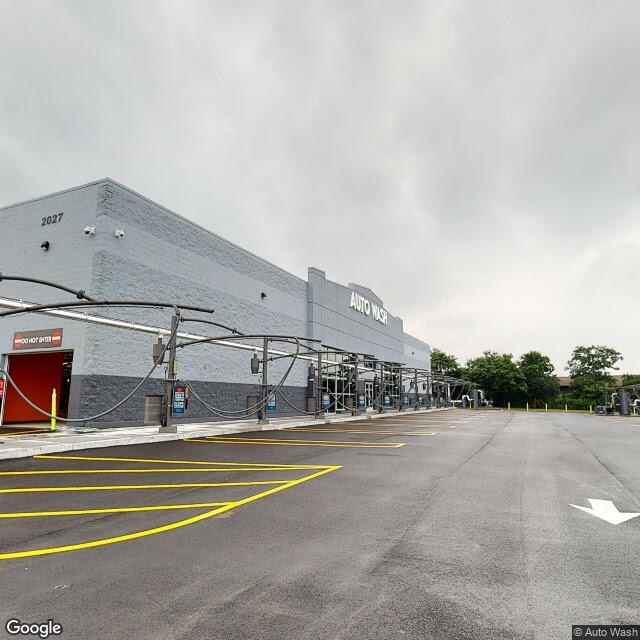

Property entry
2027 Park St & Hiawatha Blvd E
Published 2026-10-16T01:07:17+00:00
Parcel key: 0012-01-051

City records
Matches use parcel IDs, normalized addresses, or nearby coordinates. Confirm a match against the source record before relying on it. Publication dates are not source-data dates.
Vacant properties 0
No matches stored for this feed. The feed or address matching may be incomplete; this is not confirmation that no records exist.
Rental registry 0
No matches stored for this feed. The feed or address matching may be incomplete; this is not confirmation that no records exist.
Code violations 0
No matches stored for this feed. The feed or address matching may be incomplete; this is not confirmation that no records exist.
Unfit properties 0
No matches stored for this feed. The feed or address matching may be incomplete; this is not confirmation that no records exist.
AI image observations (unverified)
These observations are generated from an image, not an inspection or an official code finding. No human verification is recorded here.
Image capture date: Not recorded. The entry publication date does not establish the age of the image.
Automated image description
The image shows a large retail store with a clear sky and visible exterior conditions.
Property type guess: commercial
Visible conditions
- The building is made of concrete blocks, and there is a clear glass storefront with a sign above it. The entrance is protected by a security gate. The parking lot is empty, and no vehicles are visible in the image. The landscaping around the building is well-maintained, with no signs of overgrowth or disrepair.
- condition_scores: roof: good; siding/or facade: good; windows/doors: good; porch/or entry: good; yard/or lot: good; trash/debris: none_visible; vegetation_overgrowth: none_visible
Condition scores
No structured condition scores available.
Visible flags
- Active Construction Visible
- no
- Boarded Windows Or Doors
- no
- Fire Damage Visible
- no
- Structural Damage Visible
- no
- Vacancy Signs Visible
- yes
Possible image-only flags
- The image shows an empty parking lot, which could indicate a recent holiday or time of day when there is typically less activity, but without any context, this is a limited observation.
AI review boxes
- Visible issue label: The image shows an empty parking lot, which could indicate a recent holiday or time of day when there is typically less activity, but without any context, this is a limited observation.
Review reasons
- AI requested human review
- Possible image-only issue
- vacancy signs visible
Image quality
- Available
- True
- Bytes
- 59094
- Needs Rerun
- False
['While the building appears to be well-maintained, the time of day or recent events could affect the activity in the parking lot.']
ACS tract context
Census Tract 1; Onondaga County; New York
- Housing units
- 816
- Median gross rent
- 353800
- Median household income
- 91696
- Poverty rate
- 11.3
- Renter-occupied share
- 7.8
- Total population
- 1225
- Vacancy rate
- 2.8
OpenStreetMap nearby
meter search radius
OpenStreetMap lookup failed: HTTP Error 406: Not Acceptable